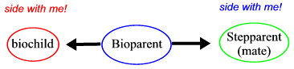

|
 If the child and stepparent clash and both appeal to the bio-parent for support, who does he or she side with? Either way, someone feels hurt. If the bioparent doesn't choose, both feel hurt! Everyone in a stepfamily gets to be the one "in the middle" from time to time. This dynamic occurs in all families and groups. |